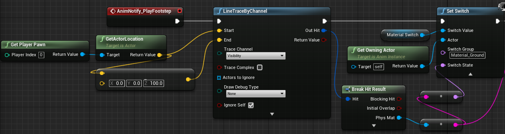

I am interested in audio and music, so I learnt the fundamentals of middleware Wwise and integrated it
into
Unreal Engine.
In this project, I have implemented dynamic footsteps. With each step the player takes, a line trace is
drawn
directly downwards from the
character model's foot to the ground. Depending on what physics material the line trace hits a different
sound
will be played. Sound
attenuation and positioning have been applied to a wood burner so that the player can tell what
direction
the
sound is coming from
(if they are wearing headphones) and once they are close enough the sound will envelop them. RTPCs
(Real-Time
Parameter Controls)
are utilized to play, increase, and decrease the volume of a heartbeat sound depending on the player’s
health.
Once the player’s health
drops below a threshold the sound will play quietly but will increase as the player’s health falls and
decreases
if it rises until it stops
playing altogether.
To view the Unreal Wwise Project GitHub repository